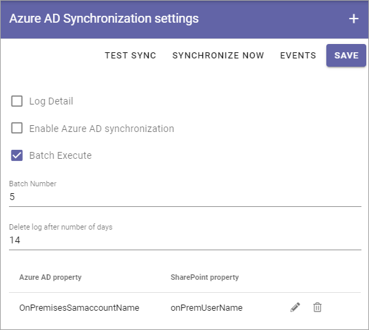

Azure AD Synchronization settings¶
Use these advanced settings to make sure person properties are synchronized from Azure AD to Sharepoint.
Note! For this to work, you have to set the Azure AD Sync Account. See that heading on this page for more information: Security
This is what’s available:
- Test: This is an option suitable for administrators to test synchronization for a limited number af users. Setup the sync to test as described below.
- SYNCHRONIZE NOW: Click this button to execute the syncrhonizations set up (listed at the bottom). If you select “Enable Azure AD Synchronization” and set and interval, you don’t have to click this button. The synchronization is then executed with the interval set.
- EVENTS: Click this button to access logs from the synchronizations.
- Log Detail: Use this if you have problems with the synchronization. In the details you will hopefully find out what’s wrong.
- Enable Azure AD Synchronization: Select this option to enable the synchronization.
- Batch Execute: This is an advanced option if you have a very long list of users - several hundreds and above. Contact you provider/consultant for help when using this.
- Batch Number: When you have selcected “Batch Execute” you use this field to set the number of users that should be synchronized each time.
- Delete log after number of days: Set the number of days the log file will be available. Default: 14 days.
At the bottom the synchronizations that has been set up are shown. By clicking the pen you can edit the same settings as when the synchronization was set up (see below).
To delete a synchronization from the list, click the dust bin.
For a scheduled synchronization you also need to add an account in the Security settings (Secrets), see: Security
Setup a new synchronization¶
To set up a new synchronization, do the following:
- Click the plus.

- Use the following settings:

- Azure AD property: Open the list and select the AD property to synchronize.
- Sharepoint property: Type the name of the Sharepoint property to synchronize to.
- Sync when value is empty: Normally empty fields are not synchronized from the AD. If you want to do that, select this option.
Here’s an example:

- Save when your finished here.
- Save your changes in the settings window.
Events¶
In the list each synchronization is described with Type, Status and start- and end time. The top icon for each post will show more details. Here’s where you will see detailed log if you selected “Log Details”.